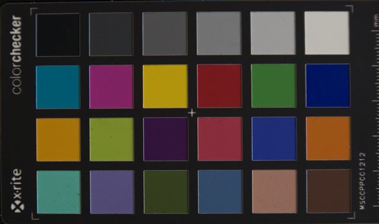
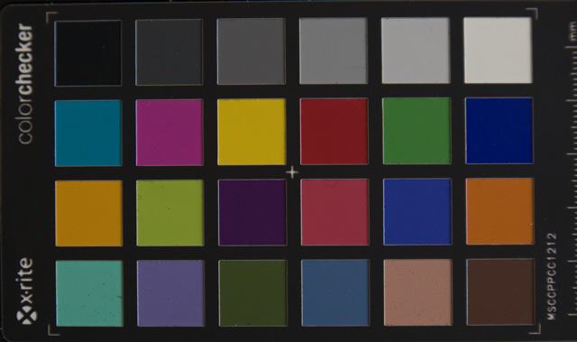

The 4 Cs model refers to a process for setting up and adjusting color reproduction equipment for the most accurate and consistent color, ensuring that each device performs at its best. The 4 Cs are depicted in a hierarchy where lower steps must be done first.
Cameras | Monitors | Proofers | Presses
- Set the camera to Manual Exposure Mode because Automatic will give different settings, therefore inconsistency, for each subject.
- Make sure lighting is all the same color temperature.
- Choose the camera's standard working space, if available (usually sRGB or AdobeRGB, Adobe is larger).
- Set the camera to Manual Exposure mode and set aperture and shutter speed using a standard 15% gray card.
Consistency
- Set the camera's gray balance to the lighting using a the 15% gray card, which is also colorimetrically neutral.
Calibration
- Capture the camera profiling target (e.g., Macbeth ColorChecker)
- Make a camera profile using a profiling program.
- Select the camera profile in Photoshop (Edit > Assign Profile), in the Camera Raw plugin, or in other software.
Characterization
- Select the camera profile in Photoshop (Edit > Assign Profile), in the Camera Raw plugin, or in other software.
- Convert to Standard Working Space (sRGB or AdobeRGB).